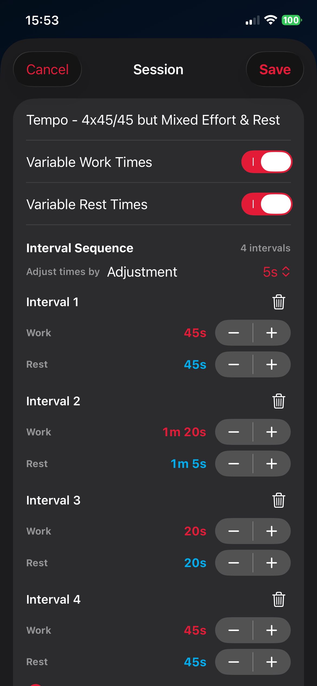

Plan and run the work
Turn a real coaching plan into a session athletes can follow.
Build a session from named sets. Keep one work and rest duration across a set, vary only the work, vary only the rest, or programme both values interval by interval. A set can therefore include 60-second drills alongside a 90-second skate sit without duplicating the surrounding session.
Repeat the complete session for up to ten rounds with an optional recovery between rounds. During training, a large countdown and clear phases stay readable at a glance; Redo returns to the beginning of the current interval when the group needs another attempt.
- Shared or interval-by-interval work and rest timing
- Repeat the whole session with optional round recovery
- Adjust duration in 1s, 5s, 10s, 30s or 1m steps
- Change beat guidance live
- Record effort, notes and heart-rate context